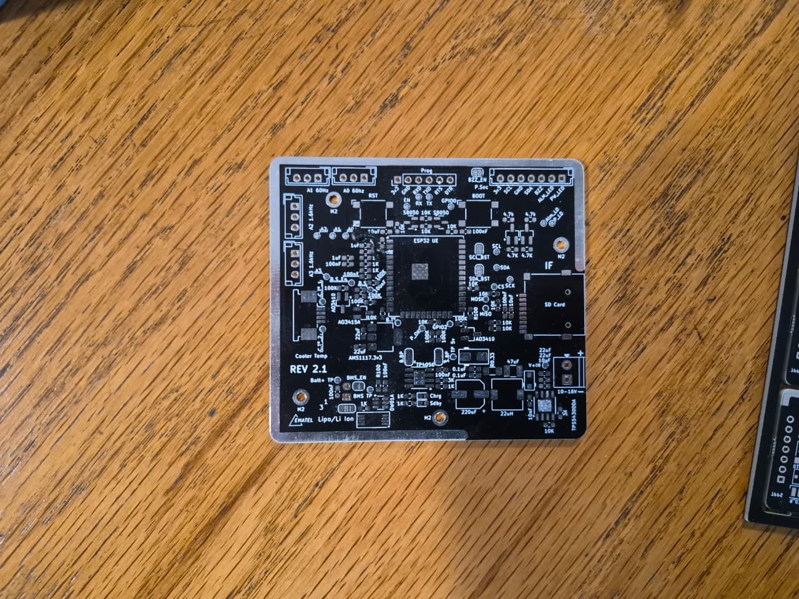

02
Proyectos Profesionales
U1 · SUE
SUE: Sensor Universal Ematel
Precursor de SAE
Primera iteración de un sensor IoT multipropósito basado en ESP32. Precursor directo de SAE: sirvió para aprender qué funciones eran realmente necesarias antes de simplificar el enfoque.



| MCU | ESP32 |
| Interfaz de usuario | Pantalla, buzzer y LEDs de estado |
| Almacenamiento | Tarjeta SD |
| Entradas | AHT20, BMP280 y puertos analógicos de propósito general |
| Resultado | Su complejidad frente al caso de uso real llevó a rediseñar el enfoque desde cero en SAE, priorizando simplicidad y costo. Ensamblados a mano. |
KiCadESP32PantallaBuzzerSDMultipropósito
U2 · SAE
SAE: Sensor Ambiental Ematel
v1.1 en operación · v2.0 en tránsito
Evolución directa de SUE: en vez de un sensor multipropósito, SAE se enfocó en ser simple, barato, fácil de implementar en monitoreo ambiental y cadena de frío. Sistema IoT desarrollado desde cero para Ematel, hoy en su tercera revisión mayor.
v0.1
Prueba de concepto
Primera versión: priorizar simplicidad, bajo costo y facilidad de implementación por sobre las funciones extra de SUE. Placas ensambladas manualmente.


v1.1
Rediseño de 4 capas
Diseño más limpio en 4 capas. Lleva más de 3 meses en funcionamiento sin fallos. Primera revisión ensamblada directamente por JLCPCB.


v2.0
Transición a stack STM32
Diseño transicional: pasa de un único ESP32-C3 a un stack basado en STM32 como MCU principal, dejando el C3 solo como módulo precertificado de comunicaciones. 4 capas, diseñada en torno a una carcasa comercial fabricada en China. PCB ensamblada en China, en tránsito para ser ensamblado con la caja en Chile.


KiCadESP32-C3STM324 capasBajo costoJLCPCB